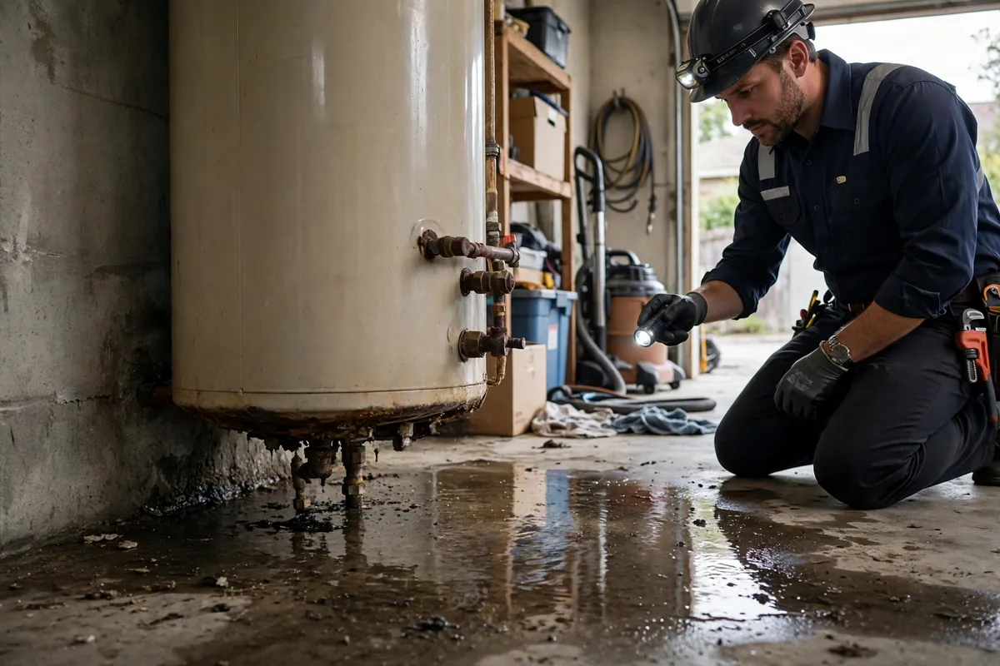

Water Heater Leak Cleanup in Hollywood, FL
A residential water heater holds 40 to 80 gallons, and when the tank lets go, all of it arrives at once. Garages flood, utility closets become wading pools, and water sheets out into hallways and adjacent rooms before anyone gets home to shut it off. Water heater leak cleanup is built for that sudden volume: fast extraction across a wide area, drying the wall cavities and closets that trap moisture, and documenting everything while your plumber handles the replacement unit.

Understanding Water Heater Leak Cleanup in Hollywood
Tank failures follow a familiar script: years of sediment buildup and internal corrosion weaken the steel until a seam or the bottom gives way — often with no warning drip beforehand. Temperature-pressure relief valve discharges and supply-line failures at the top of the unit are the other two modes, and all three share one trait: the water keeps coming until someone closes the supply valve. Drip pans help only if they have a working drain; most just overflow politely onto the floor.
The damage spreads wider than the puddle suggests. Hot water accelerates absorption into drywall and baseboards. Utility closets, with their poor airflow and tight quarters, hold humidity long after the visible water is gone — the wall cavities behind and beside the heater stay damp while the garage floor looks dry. And because heaters usually sit against shared walls, the rooms on the other side take water through the bottom plates before anyone thinks to check them.
How We Handle the Job
The heater's water supply and power or gas get shut off first — your plumber typically handles this on arrival, and we coordinate around it. Extraction covers the full spread: garage or utility floor, the closet interior, and every adjacent room the water reached. Baseboards come off along wet walls so the bottom plates and lower drywall can be read with meters; where readings show cavity moisture, small openings let airflow in. Drying equipment runs with the closets' poor ventilation in mind, and nothing is closed back up until readings verify it.
We map the full spread so the rooms you didn't suspect get checked too. If the loss is extensive, related work such as emergency water extraction, structural drying, or flood cleanup may be part of the same job — while the new heater itself is your plumber's scope, start to finish.
Local Response and Insurance Support
Searching for water heater leak cleanup near me usually means you need help without delay. We answer emergency calls around the clock. Documentation — photos and moisture readings — supports conversations with your insurance carrier when the loss is sudden and accidental. We do not decide coverage; we provide clear technical information about the work performed.
When to Call
Call if you have active water, wet materials that are not drying, odors after a leak, or a backup that may involve contaminated water. Early action in Hollywood’s climate is almost always less disruptive than waiting. For neighborhood-specific service, see our service areas. For the full list of capabilities, visit all services.
Frequently Asked Questions
How much water are we talking about when a heater fails?
A standard residential tank holds 40 to 80 gallons. When the tank ruptures, most of that releases at once — enough to flood a garage and push into every adjoining room at floor level.
Should I shut off the water heater myself?
If it's actively leaking, close its water supply valve and turn off power or gas to the unit, then call a plumber. After that, the water damage itself is our scope — extraction, drying, documentation.
Why is the drywall behind the heater wet when the floor looks dry?
Utility closets trap humidity with almost no airflow, so wall cavities stay damp long after surface water is gone. We meter those hidden areas rather than trusting appearances.
Do you install the replacement water heater?
No — heater replacement is plumber's work, including the pan, valve, and connections. We handle everything the failed unit's water damaged: extraction, structural drying, and the documentation file.